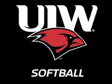

Introduction
Hi! My name is Natalie Myers. I am an Undergraduate student who plays softball at the University of the Incarnate Word. I am majoring in Management Information Systems and minoring in Computer Information Systems.
My Education
University of the Incarnate Word
Major: Management Information Systems
Minor: Computer Information Systems
Overall GPA: 4.0
My work experience originates at Idea Lab Kids corporate location. I was hired as a seasonal contractor to be a Cirriculumn Development Specialist for the summer of 2020. Most of my duties was for quality assurance on the company's lasson plans; however, other duties include creating and implementing the lesson plans into daily operations. My other work experiences are from my varying positions at the University of the Incarnate Word. My initial position was working as a teaching assisstant for the Programming 1 course. While in my position, I would sit in on classes and assist students in the formulation and execution of software written in the C# programming language. My current position is a research assistant within the University's Autonomous Vehicles Systems Lab. I perform groundbreaking research related to autonomous vehicles, artificial intelligence, and machine learning. More information regarding my educational and work experience can be found within the Expereince Page.
My Work Experience

Outside of my engagements within the educational and employment endeavors, I am also involved in many organizations. Most notibly, I am a Division 1 athlete who plays softball for the University of the Incarnate Word and am a pitcher. I am also heavily involved in the Student Government Association as an athletic senator for softball. As a senator, I relay student difficulties to the faculty, vote and collaborate to resolve pressing issues, and inform students of important school news. Furthermore, I am also a leader for the UIW chapter of the Fellowship of Christain Athletes(FCA). As an FCA leader, I help conduct FCA meetings and events. Within these meetings, students and student-athletes alike gather in worship and build lifelong relationships. I am also a member of the UIW Business Club, the UIW chapter of the Information Audit and Control Association, and more which can be found within the Involvements Page.
My Involvements

In addition to my career and educational involvements and achievements, I also try to ensure that I am living a balanced livestyle by allocating time to indulge into my personal interests and hobbies. One of my most notable general interests is computer technology; from artificial intelligence to virtual reality to quantum computing and much more, the endless capabilities for the application of technology entices me to learn more. Almost anything can be accomplished with technology, so I'd love to be able to make meaningful contributions with my passion. As for some of my hobbies, my most notable is videogames. Videogames are a wonderful blend of storytelling and technology to challenge both one's mind and one's skill. Furthermore, they help inspire me to create more and helps fuel my other hobby of casual programming. My other interests can be found within the Projects page.
Projects